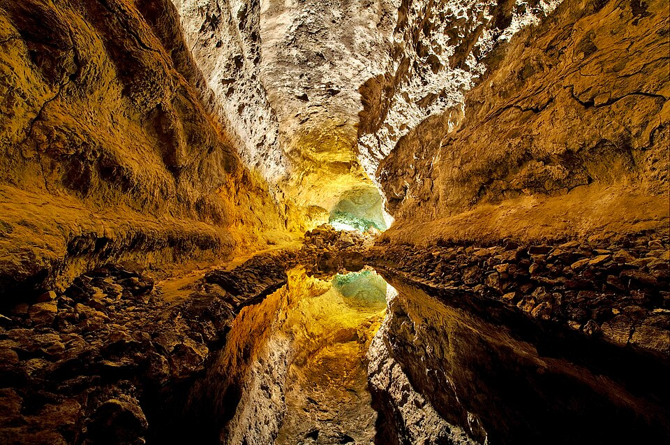

Galería

El interior de la Cueva de los Verdes. Ubicada específicamente en el norte de la isla de Lanzarote, dentro del municipio de Haría, integrada en el paisaje volcánico del Monumento Natural del Malpaís de la Corona.